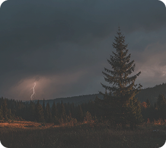
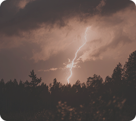
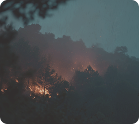

Гроза
Правила поведения в лесу
Как безопасно переждать грозу в лесу
Гроза в лесу может выглядеть пугающе: гром, вспышки молнии и сильный ветер создают ощущение опасности. Но в большинстве случаев риск можно значительно снизить, если действовать спокойно и последовательно.
Главное — не паниковать и быстро оценить ситуацию.
Как молния ведёт себя в лесу
Молния чаще всего ударяет в самые высокие объекты: отдельно стоящие деревья, вершины холмов и линии электропередач.
В густом лесу риск ниже, потому что деревья имеют примерно одинаковую высоту, и разряд распределяется, а не бьёт в одну точку.



Наиболее опасные места во время грозы
Когда гроза уже близко
Гроза может начаться неожиданно. Если между вспышкой молнии и громом проходит всего несколько секунд, значит она уже рядом. В такой ситуации важно сразу действовать: найти участок густого леса, спуститься с возвышенности и держаться подальше от воды.
Большинство гроз проходит быстро, и уже через 20–30 минут интенсивность обычно снижается.
Где безопаснее переждать грозу
40%
Густой лес
30%
Низина или овраг
30%
Низина или овраг
10%
Открытая поляна
Простые правила безопасности
Во время грозы важно не становиться самой высокой точкой вокруг. Лучше не стоять рядом с одиночными деревьями, не подниматься на возвышенности и избегать открытых пространств.
Если гроза застала тебя на открытой местности, постарайся как можно быстрее перейти в участок густого леса и держаться подальше от воды.
Молния стремится в самую высокую точку вокруг. Лучшее решение — не быть этой точкой.
Спокойствие и правильные решения
Гроза — естественная часть природы, и в лесу она происходит довольно часто. Но знание простых правил позволяет переждать её спокойно и без риска.
Если избегать открытых мест, держаться подальше от самых высоких объектов и найти безопасное место среди деревьев, даже сильная гроза не испортит прогулку.